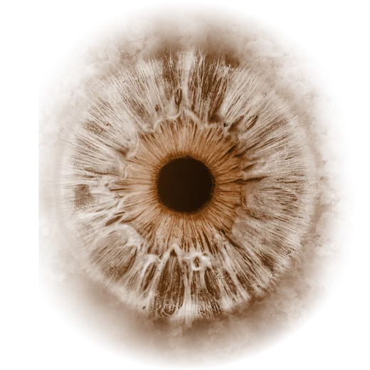
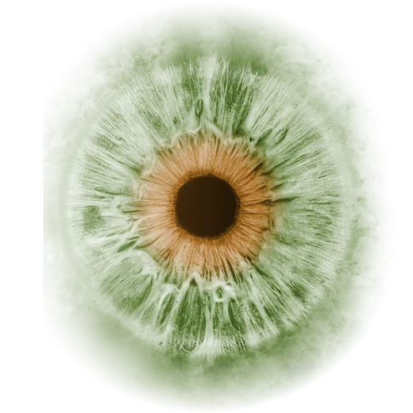
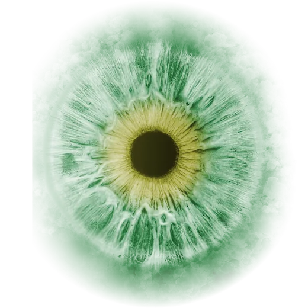
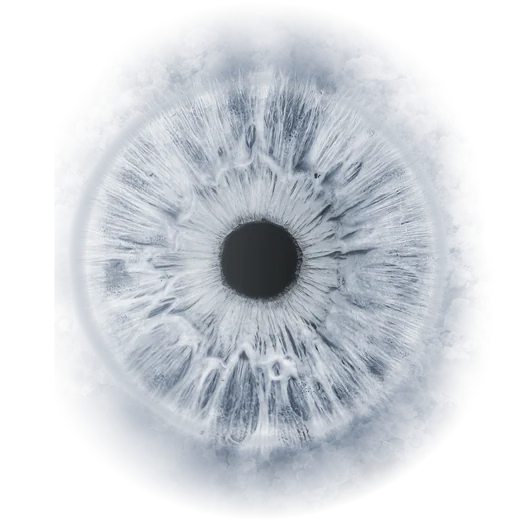
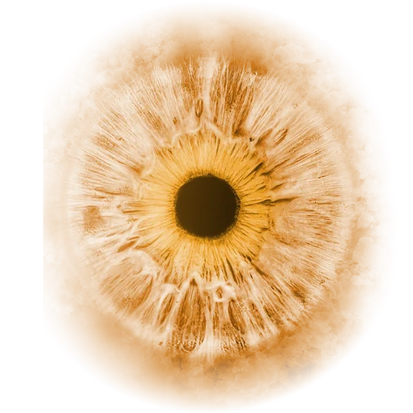

Visão
{{ selo }}







{{ rec.titulo }}
{{ rec.texto }}
Os teus olhos
{{ olhosSub }}
Olho esquerdo
{{ olhoEsq.valor }}{{ olhoEsq.uni }}
{{ olhoEsq.estado }}
Olho direito
{{ olhoDir.valor }}{{ olhoDir.uni }}
{{ olhoDir.estado }}
{{ olhosNota }}